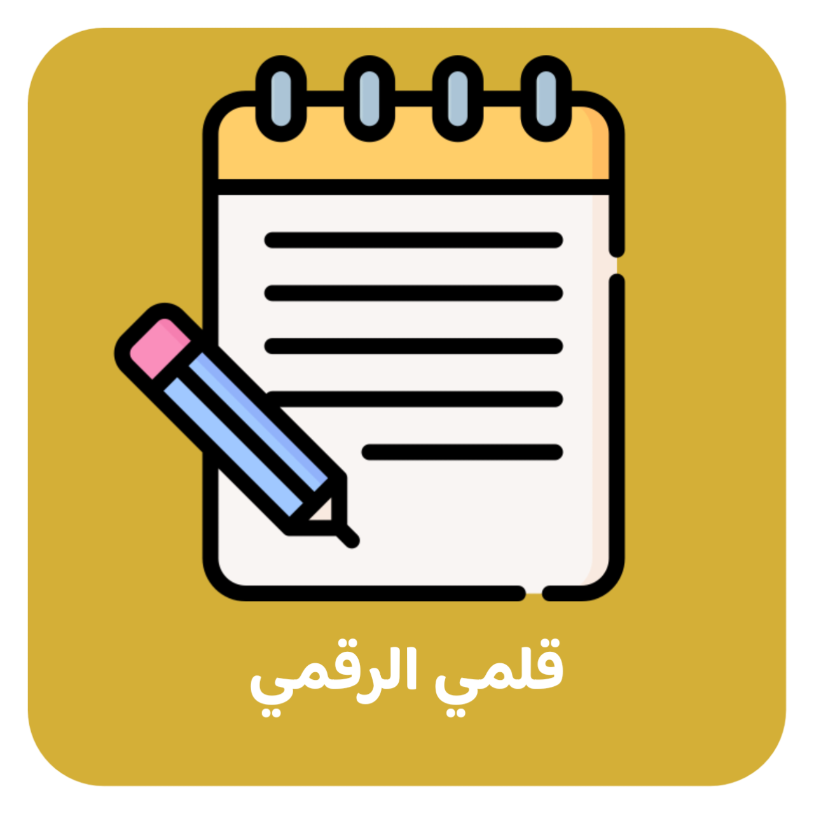
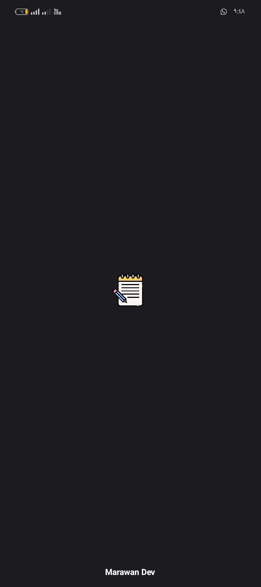
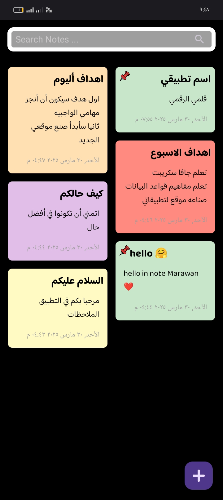
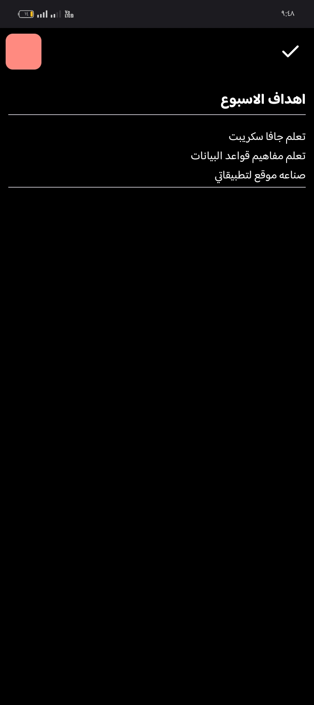
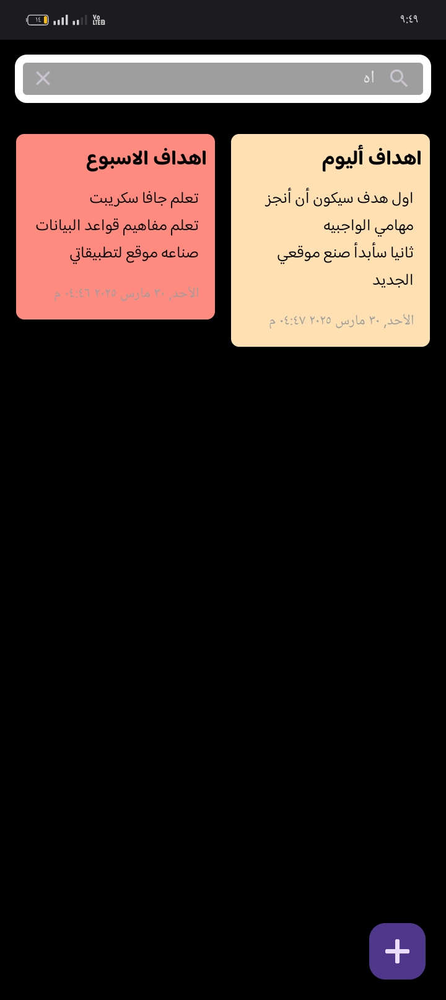

قلمي الرقمي
تطبيق قلمي الرقمي تطبيق بسيط يقدم لك تجربة فريدة من نوعها، حيث تستطيع تسجيل أفكارك والعودة إليها في وقت لاحق مع ميزة تغيير اللون الخاص بكل مدونة، كما أن التطبيق مفتوح المصدر... ❤️🥰
   
تنزيل التطبيق
الكود المصدري